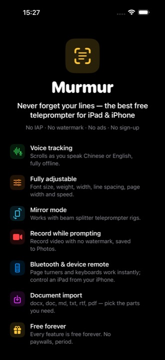
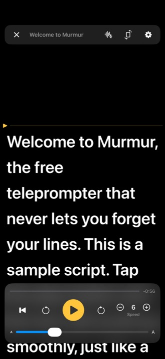
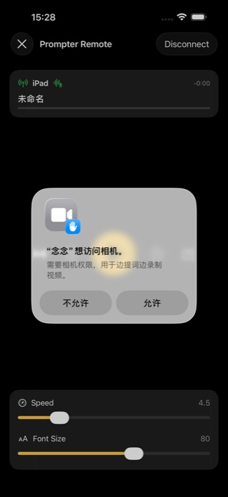
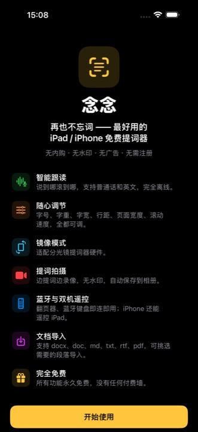
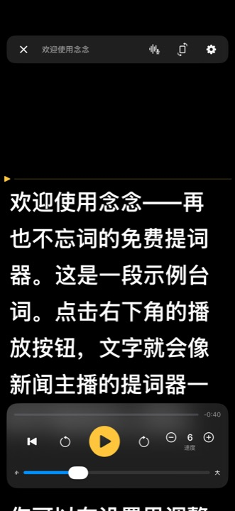
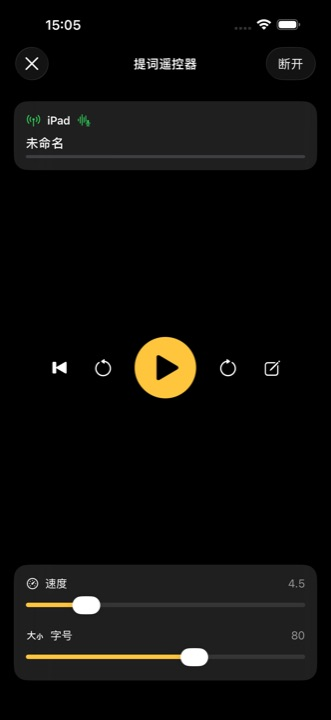

The prompter scrolls as you speak English or Chinese: pause and it waits, skip ahead and it catches up. Recognition runs on your device wherever supported.
Font size, weight, width, line spacing, page width and scroll speed — every knob is yours.
Horizontal and vertical mirroring for beam splitter teleprompter rigs.
Film with the script docked near the lens. 1080p, no watermark, saved straight to Photos — voice tracking keeps working while recording.
Page turners, clicker rings and keyboards work instantly. A second iPhone or iPad becomes a full control console — even for live script editing.
docx, doc, md, txt, rtf and pdf. Pick exactly the paragraphs you need.
Unlimited scripts, unlimited length, every feature free forever. No paywalls, period.
说到哪滚到哪：识别普通话或英文，停顿即停、跳读自动追上；设备支持时在本机完成识别。
字号、字重、字宽、行距、页面宽度、滚动速度，全都可调。
水平 / 垂直镜像，适配分光镜提词器硬件。
边提词边录像，1080p 无水印，自动保存到相册，录制中跟读照常工作。
翻页器、蓝牙键盘即连即用；另一台 iPhone / iPad 秒变遥控台，还能远程编辑台词。
支持 docx、doc、md、txt、rtf、pdf，复杂排版可挑选段落导入。
稿件无限、字数无限、功能永久免费，没有任何付费墙。
Core teleprompter features shouldn't cost a yearly subscription. Murmur unlocks everything other apps keep behind paywalls — and all your data stays on your device.
提词器的核心功能本不该按年收费。念念把别家锁在会员里的功能全部免费开放，数据全部留在你的设备上。